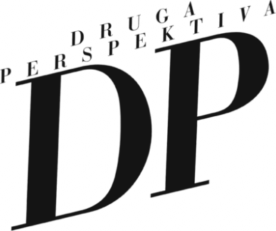

Kratki vodič: od ideje do objavljenog teksta

Ovaj vodič je za sve u redakciji, i za one koji pišu prvi put i za one koji su već objavljivali. Ne moraš ga znati napamet. Pročitaj ga jednom, a kad pišeš tekst, vrati se na dio koji ti treba.
Najbolje teme su one o kojima se priča u hodnicima, a o kojima još niko nije napisao ništa ozbiljno. Ne moraš čekati da ti dam temu. Ako ti nešto pada u oči, to je vjerovatno dobar početak.
Prije nego što predložiš temu, odgovori sebi na tri pitanja:
Najčešća greška je preširoka tema. „Sport u školi“ nije tema, to je oblast. Tema je jedna konkretna priča unutar nje.
| Preširoko | Konkretno |
|---|---|
| Sport u školi | Kako su se naši stonoteniseri pripremali za Gimnazijadu na kojoj su osvojili prvo mjesto |
| Društvene mreže | Koliko anketa učenici dobiju na mail u jednoj sedmici (tekst „Digitalni haos u školskim klupama“) |
| Čitanje | Zašto učenici sve manje čitaju? (kolumna Lejle Bučo) |
| Hrana | Koliko košta užina u okolini škole i šta se za te pare dobije |
Ideju mi pošalji na Instagram, Viber ili mail, u dvije-tri rečenice: o čemu bi pisao/la, zašto je to zanimljivo baš sada i s kim bi razgovarao/la. Na primjer:
„Hoću pisati o tome koliko anketa dobijamo na mail. Svi se ovih dana žale na to. Pitala bih nekoliko učenika iz različitih razreda i jednog profesora koji šalje ankete.“
U vijesti najvažnije ide na početak. Neko ko pročita samo prvu rečenicu treba znati šta se desilo. Ta rečenica odgovara na pitanja ko, šta, gdje i kada, a ako može, i zašto.
Poslije prve rečenice idu detalji: kako je tekla utakmica, ko se istakao, šta su rekli igrači ili trener. Ono što je najmanje važno ide na kraj, jer ako tekst treba skratiti, kratimo odozdo.
Naslov kaže šta se desilo, s glagolom, i to konkretno. Bez velikih slova, bez uskličnika i bez mamaca tipa „Nećete vjerovati…“.
Izvod je jedna rečenica ispod naslova. Treba dodati nešto novo, a ne ponoviti naslov drugim riječima.
Vijest obično ima 250 do 500 riječi, a izvještaj s većeg događaja do 700. Ako imaš više, vjerovatno imaš dva teksta.
U mišljenju smiješ napisati šta misliš, ali moraš objasniti zašto tako misliš. Tekst koji samo kaže „ovo je loše“ nikoga neće uvjeriti.
Mišljenje ne mora biti kritika. Može biti recenzija filma ili knjige, komentar na neku školsku odluku, otvoreno pismo ili tekst „za i protiv“ koji pišu dvoje učenika s različitim stavovima. Svaki tekst mišljenja potpisuješ imenom i prezimenom. Kritikuj odluke i postupke, nikad ljude lično.
Prije razgovora pročitaj šta se o temi već zna i zapiši pitanja. Postavljaj otvorena pitanja, ona na koja se ne može odgovoriti samo s „da“ ili „ne“.
Kad dobiješ kratak ili neodređen odgovor, odmah pitaj dalje: „Šta to konkretno znači?“ ili „Možete li dati primjer?“
Kad pišeš o nečijoj odluci, tu osobu pitaj za komentar prije objave i ostavi joj dovoljno vremena da odgovori. Ako odgovor ne stigne, napiši to u tekstu: „Upitali smo upravu škole za komentar, ali do objave nismo dobili odgovor.“ Tako je tekst fer i niko ti ne može reći da nisi pitao/la.
Pitanja možeš poslati i mailom. Budi ljubazan/na, objasni za koji tekst pitaš, pitanja numeriši i na početku navedi činjenice koje si već provjerio/la. Takav mail se teško ignoriše.
Zapiši ili snimi šta je ko rekao (za snimanje pitaj dozvolu). Citiraj tačno. Smiješ ispraviti sitnice iz govornog jezika, ali ne smiješ promijeniti smisao. Citat ide u bosanske navodnike, a uz njega ime i ko je ta osoba:
„Imamo jako dobru ekipu ove godine, tako da sam sretna“, rekla je Tea, igračica Katoličkog školskog centra.
Ako neko ne želi da mu se objavi ime, javi mi se prije nego što to obećaš.
Uz svaku fotografiju ide ime autora: Foto: Ime Prezime. Ako fotografiju posuđujemo, navodimo i odakle je, na primjer Foto: Tarik Salčin, Polet – Prva gimnazija. Tuđu fotografiju koristimo samo uz dozvolu. Za sajt su najbolje vodoravne fotografije, s ljudima u akciji, a ne poredanim za slikanje. Ne slikamo ljude tamo gdje to ne očekuju, i pitamo prije nego što nekoga slikamo izbliza.
Prije predaje još jednom provjeri imena (pitaj kako se pišu, posebno č i ć), brojeve, datume, rezultate i funkcije ljudi. Piši tačno ono što znaš, ni više ni manje. Ako si nešto provjeravao/la četiri sedmice, napiši „u četiri sedmice provjere“, a ne „nikad“. Precizna rečenica je jača i niko je ne može osporiti.
| Šta | Kako |
|---|---|
| Ijekavica | vrijeme, mlijeko, rješenje, htio, djevojke |
| Navodnici | „ovako“, ne "ovako" |
| Datum | 11. novembar 2026., ne 11 Novembra, 2026 |
| Naslov | Veliko slovo samo na početku i u imenima: Druga gimnazija prvak u stonom tenisu |
| Brojevi | do deset slovima (tri utakmice), rezultati ciframa (35:23, 2:0) |
| Imena | Druga gimnazija, Prva bošnjačka gimnazija, Gimnazijada, Vijeće učenika |
Rok dogovaramo za svaki tekst posebno. Ako vidiš da nećeš stići, javi mi se ranije, a ne na dan roka.
Pitanja, ideje i tekstove šalji meni: Tarik Bećarević, tarik.becarevic@2gimnazija.edu.ba, Instagram @tarikbecarevic ili Viber.